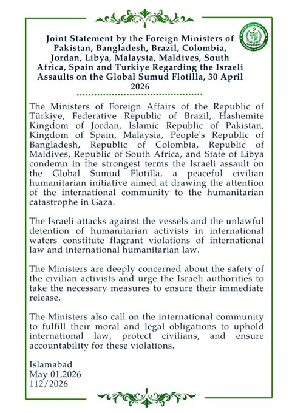

@ForeignOfficePk
📝 原文: PR No./Joint Statement by the Foreign Ministers of Pakistan, Bangladesh, Brazil, Colombia, Jordan, Libya, Malaysia, Maldives, South Africa, Spain and Turkiye Regarding the Israeli Assaults on the Global Sumud Flotilla, 30 April 2026
🇨🇳 译文: PR 号/巴基斯坦、孟加拉国、巴西、哥伦比亚、约旦、利比亚、马来西亚、马尔代夫、南非、西班牙和土耳其外交部长关于以色列袭击全球 Sumud 船队的联合声明，2026 年 4 月 30 日



🕒 2026-04-30T19:24:52+00:00